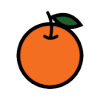
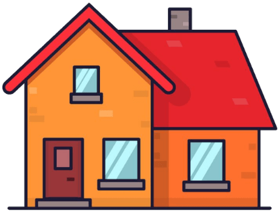

Hay cantidades que están relacionadas de modo que si una cambia, la otra también. La relación que las une se
llama proporcionalidad. Se dice de ellas que son cantidades proporcionales.
Si dos cantidades son proporcionales de modo que cuando una crece entonces la otra también, se dice que son
directamente proporcionales. Su relación es de proporcionalidad directa.
En este cuadro se muestra la relación de proporcionalidad directa entre cantidad de naranjas y cantidad
de jugo.
Cambia la cantidad de naranjas
{{e1CantidadNaranjas}}

La cantidad de naranjas y la cantidad de jugo están relacionadas: si una cambia, la otra
también.
Si dos cantidades son proporcionales de modo que cuando una crece entonces la otra decrece, se dice que son
inversamente proporcionales. Su relación es de proporcionalidad inversa.
En este cuadro se muestra una relación de proporcionalidad inversa entre cantidad de trabajadores y el
tiempo que toma construir una casa
Selecciona la cantidad de trabajadores.
{{h2CantidadTrabajadores}}

Si crece la cantidad de trabajadores, se reduce el tiempo que toma construir una casa.